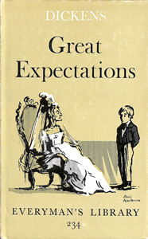

On Christmas Eve, around 1812, Pip, an orphan who is about seven years old, encounters an escaped convict in the village churchyard, while visiting the graves of his parents and siblings. Pip now lives with his abusive elder sister and her kind husband Joe Gargery, a blacksmith. The convict scares Pip into stealing food and a file. Early on Christmas morning Pip returns with the file, a pie and brandy. During Christmas Dinner that evening, at the moment Pip's theft is about to be discovered, soldiers arrive and ask Joe to repair some shackles. Joe and Pip accompany them as they recapture the convict who is fighting with another escaped convict. The first convict confesses to stealing food from the smithy.
A year or two later, Miss Havisham, a wealthy spinster who still wears her old wedding dress and lives as a recluse in the dilapidated Satis House, asks Mr Pumblechook, a relation of Joe Gargery, to find a boy to visit her. Pip visits Miss Havisham and falls in love with her adopted daughter Estella. Estella remains aloof and hostile to Pip, which Miss Havisham encourages. Pip visits Miss Havisham regularly, until he is old enough to learn a trade.
Joe accompanies Pip for the last visit, when she gives the money for Pip to be bound as apprentice blacksmith. Joe's surly assistant, Dolge Orlick, is envious of Pip and dislikes Mrs Joe. When Pip and Joe are away from the house, Mrs Joe is brutally attacked, leaving her unable to speak or do her work. Orlick is suspected of the attack. Mrs Joe becomes kind-hearted after the attack. Pip's former schoolmate Biddy joins the household to help with her care.
Four years into Pip's apprenticeship, Mr Jaggers, a lawyer, tells him that he has been provided with money, from an anonymous benefactor, so that he can become a gentleman. Pip is to leave for London, but presuming that Miss Havisham is his benefactor, he first visits her.
Pip sets up house in London at Barnard's Inn with Herbert Pocket, the son of his tutor, Matthew Pocket, who is a cousin of Miss Havisham. Herbert and Pip have previously met at Satis Hall, where Herbert was rejected as a playmate for Estella. He tells Pip how Miss Havisham was defrauded and deserted by her fiancé. Pip meets fellow pupils, Bentley Drummle, a brute of a man from a wealthy noble family, and Startop, who is agreeable. Jaggers disburses the money Pip needs.
When Joe visits Pip at Barnard's Inn, Pip is ashamed of him. Joe relays a message from Miss Havisham that Estella will be at Satis House for a visit. Pip returns there to meet Estella and is encouraged by Miss Havisham, but he avoids visiting Joe. He is disquieted to see Orlick now in service to Miss Havisham. He mentions his misgivings to Jaggers, who promises Orlick's dismissal. Back in London, Pip and Herbert exchange their romantic secrets: Pip adores Estella and Herbert is engaged to Clara. Pip meets Estella when she is sent to Richmond to be introduced into society.
Pip and Herbert build up debts. Mrs Joe dies and Pip returns to his village for the funeral. Pip's income is fixed at £500 per annum when he comes of age at twenty-one. With the help of Jaggers' clerk, Wemmick, Pip plans to help advance Herbert's future prospects by anonymously securing him a position with the shipbroker, Clarriker's. Pip takes Estella to Satis House. She and Miss Havisham quarrel over Estella's coldness. In London, Bentley Drummle outrages Pip, by proposing a toast to Estella. Later, at an Assembly Ball in Richmond, Pip witnesses Estella meeting Bentley Drummle and warns her about him; she replies that she has no qualms about entrapping him.
A week after he turns 23 years old, Pip learns that his benefactor is the convict he encountered in the churchyard, Abel Magwitch, who had been transported to New South Wales after that escape. He has become wealthy after gaining his freedom there, but cannot return to England. However, he returns to see Pip, who was the motivation for all his success. Pip is shocked, and stops taking money from him. Subsequently, Pip and Herbert Pocket devise a plan for Magwitch to escape from England.
Magwitch shares his past history with Pip, and reveals that the escaped convict whom he fought in the churchyard was Compeyson, the fraudster who had deserted Miss Havisham.
Pip returns to Satis Hall to visit Estella and encounters Bentley Drummle, who has also come to see her and now has Orlick as his servant. Pip accuses Miss Havisham of misleading him about his benefactor. She admits to doing so, but says that her plan was to annoy her relatives. Pip declares his love to Estella, who, coldly, tells him that she plans on marrying Drummle. Heartbroken, Pip walks back to London, where Wemmick warns him that Compeyson is seeking him. Pip and Herbert continue preparations for Magwitch's escape.
At Jaggers's house for dinner, Wemmick tells Pip how Jaggers acquired his maidservant, Molly, rescuing her from the gallows when she was accused of murder.
Then, full of remorse, Miss Havisham tells Pip how the infant Estella was brought to her by Jaggers and raised by her to be cold-hearted. She knows nothing about Estella's parentage. She also tells Pip that Estella is now married. She gives Pip money to pay for Herbert Pocket's position at Clarriker's, and asks for his forgiveness. As Pip is about to leave, Miss Havisham accidentally sets her dress on fire. Pip saves her, injuring himself in the process. She eventually dies from her injuries, lamenting her manipulation of Estella and Pip. Pip now realises that Estella is the daughter of Molly and Magwitch. When confronted about this, Jaggers discourages Pip from acting on his suspicions.
A few days before Magwitch's planned escape, Pip is lured by an anonymous letter into a sluice house near his old home, where he is seized by Orlick, who intends to kill him. Orlick confesses to injuring Pip's sister. As Pip is about to be struck by a hammer, Herbert Pocket and Startop arrive to rescue him. The three of them pick up Magwitch to row him to the steamboat for Hamburg, but they are met by a police boat carrying Compeyson, who has offered to identify Magwitch. Magwitch seizes Compeyson, and they fight in the river. Seriously injured, Magwitch is taken by the police. Compeyson's body is found later.
Pip is aware that Magwitch's fortune will go to the crown after his trial. But Herbert, who is preparing to move to Cairo, Egypt, to manage Clarriker's office there, offers Pip a position there. Pip regularly visits Magwitch in the prison hospital as he awaits trial, and on Magwitch's deathbed tells him that his daughter Estella is alive. After Herbert's departure for Cairo, Pip falls ill in his rooms, and faces arrest for debt. However, Joe nurses Pip back to health and pays off his debt. When Pip begins to recover, Joe slips away. Pip then returns to propose to Biddy, only to find that she has married Joe. Pip asks Joe's forgiveness, promises to repay him and leaves for Cairo. There he shares lodgings with Herbert and Clara, and eventually advances to become third in the company. Only then does Herbert learn that Pip paid for his position in the firm.
After working eleven years in Egypt, Pip returns to England and visits Joe, Biddy and their son, Pip Jr. Then in the ruins of Satis House he meets the widowed Estella, who asks Pip to forgive her, assuring him that misfortune has opened her heart. As Pip takes Estella's hand and they leave the moonlit ruins, he sees "no shadow of another parting from her".
1917 - Great Expectations, a silent film, starring Jack Pickford, directed by Robert G. Vignola.
1922 - Great Expectations, a silent film, made in Denmark, starring Martin Herzberg, directed by A. W. Sandberg.
1934 - Great Expectations, a film starring Phillips Holmes and Jane Wyatt, directed by Stuart Walker.
1939 - Great Expectations, London stage adaptation made by Alec Guinness, which was to influence David Lean's 1946 film, in which both Guinness himself and Martita Hunt reprised their stage roles.
1946 - Great Expectations, the most celebrated film version, directed by David Lean and starring John Mills as Pip, Bernard Miles as Joe, Alec Guinness as Herbert Pocket, Finlay Currie as Magwitch, Martita Hunt as Miss Havisham, Jean Simmons as Young Estella and Valerie Hobson as the adult Estella. It came fifth in a 1999 BFI poll of the top 100 British films.
1954 - Great Expectations, a two-part television version starring Roddy McDowall as Pip and Estelle Winwood as Miss Havisham. It aired as an episode of the show Robert Montgomery Presents.
1959 - Great Expectations, a BBC television version starring Dinsdale Landen as Pip, Helen Lindsay as Estella, Colin Jeavons as Herbert Pocket, Marjorie Hawtrey as Miss Havisham and Derek Benfield as Landlord.
1967 - Great Expectations, a ten-part BBC television serial starring Gary Bond and Francesca Annis.
1974 - Great Expectations, a film starring Michael York as Pip and Simon Gipps-Kent as Young Pip, Sarah Miles and James Mason, directed by Joseph Hardy.
1975 - Great Expectations, Stage Musical (London West End). Music by Cyril Ornadel, lyrics by Hal Shaper, starring Sir John Mills. Ivor Novello Award for Best British Musical.
1981 - Great Expectations, a BBC serial starring Stratford Johns, Gerry Sundquist, Joan Hickson, Patsy Kensit and Sarah-Jane Varley. Produced by Barry Letts, and directed by Julian Amyes.
1983 - Great Expectations, an animated children's version, starring Phillip Hinton, Liz Horne, Robin Stewart and Bill Kerr.
1988 - Great Expectations, Glasgow Mayfest, stage version by the Tag Theatre Company in association with the Gregory Nash group
1989 - Great Expectations, a Disney Channel two-part film starring Anthony Hopkins as Magwitch, John Rhys-Davies as Joe Gargery, and Jean Simmons as Miss Havisham, directed by Kevin Connor.
1995 - Great Expectations, Stage adaptation at Dublin's Gate Theatre by Hugh Leonard.
1998 - Great Expectations, a film starring Ethan Hawke and Gwyneth Paltrow, directed by Alfonso Cuarón. This adaptation is set in contemporary New York, and renames Pip to Finn and Miss Havisham to Nora Dinsmoor. The film's score was composed by Patrick Doyle.
1999 - Great Expectations, a BBC film starring Ioan Gruffudd as Pip, Justine Waddell as Estella, and Charlotte Rampling as Miss Havisham. Also shown as part of the Masterpiece Theatre TV series.
2002 - Great Expectations, Melbourne Theatre Company four-hour re-telling, in an adaptation by company director Simon Phillips.
2005 - Great Expectations, Royal Shakespeare Company adaptation by the Cheek by Jowl founders Declan Donnellan and Nick Ormerod, with Sian Phillips as Miss Havisham
2011 - Great Expectations, a three-part BBC TV series, starring Ray Winstone as Magwitch, Gillian Anderson as Miss Havisham and Douglas Booth as Pip.
2012 - Great Expectations, a film directed by Mike Newell, starring Ralph Fiennes as Magwitch, Helena Bonham Carter as Miss Havisham and Jeremy Irvine as Pip.
2013 - Great Expectations, West End adaptation written by Jo Clifford and directed by Graham McLaren. Paula Wilcox as Miss Havisham, Chris Ellison as Magwitch and Grace Rowe as Estella. The staged adaptation was also filmed in 2013 (by Graham McLaren).
2015 - Great Expectations, Dundee Repertory Theatre adaptation written by Jo Clifford and directed by Jemima Levick.
2016 - Great Expectations, West Yorkshire Playhouse adaptation written by Michael Eaton, directed by Lucy Bailey and starring Jane Asher as Miss Havisham.